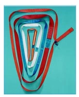

Funi tonde e anelli
Funi tonde ad anello chiuso
Fune tonda tessile ad anello chiuso per il sollevamento.
- Configurazione
- Anello chiuso
- Coefficiente documentato
- 7:1
Varianti documentate
Confronta i dati disponibili. Le tavole originali completano le informazioni della scheda.
| Variante | Portata singola documentata | Colore |
|---|---|---|
| NFT 1 | 1.000 kg | Viola |
| NFT 2 | 2.000 kg | Verde |
| NFT 3 | 3.000 kg | Giallo |
| NFT 4 | 4.000 kg | Grigio |
| NFT 5 | 5.000 kg | Rosso |
| NFT 6 | 6.000 kg | Marrone |
| NFT 8 | 8.000 kg | Azzurro |
| NFT 10 | 10.000 kg | Arancio |
| NFT 12 | 12.000 kg | Arancio |
| NFT 15 | 15.000 kg | Arancio |
| NFT 20 | 20.000 kg | Arancio |
| NFT 25 | 25.000 kg | Arancio |
| NFT 30 | 30.000 kg | Arancio |
| NFT 40 | 40.000 kg | Arancio |
| NFT 50 | 50.000 kg | Arancio |
Prima di scegliere.
Dati trascritti dal catalogo originale. Portate, misure, configurazioni e riferimenti normativi vanno confermati nella documentazione del prodotto fornito; i valori non costituiscono istruzioni di impiego.